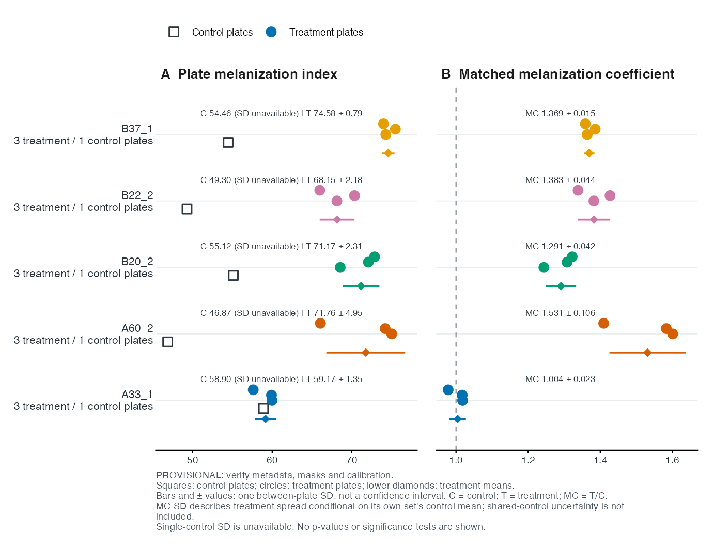
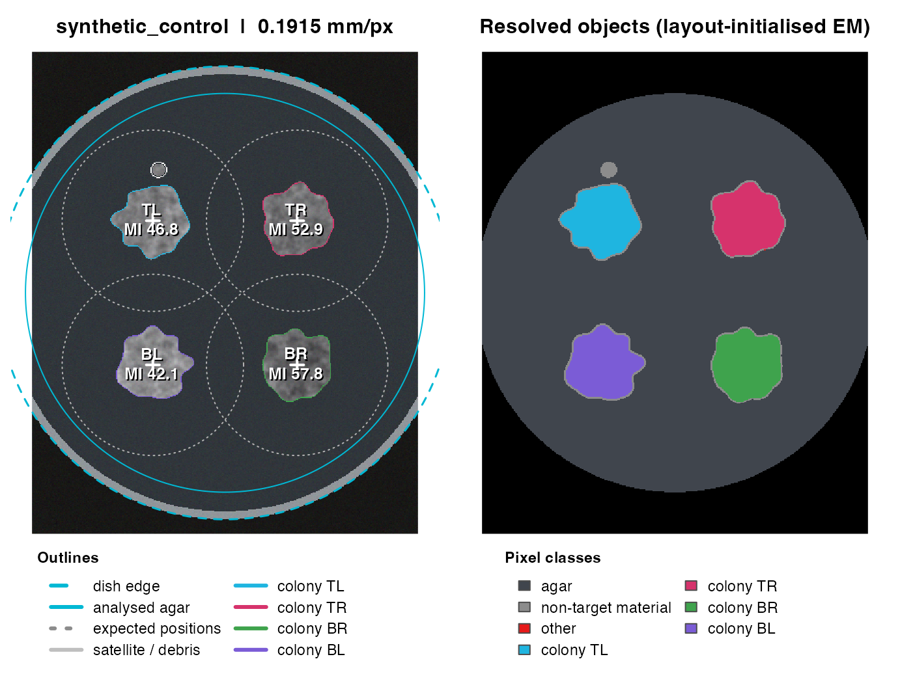
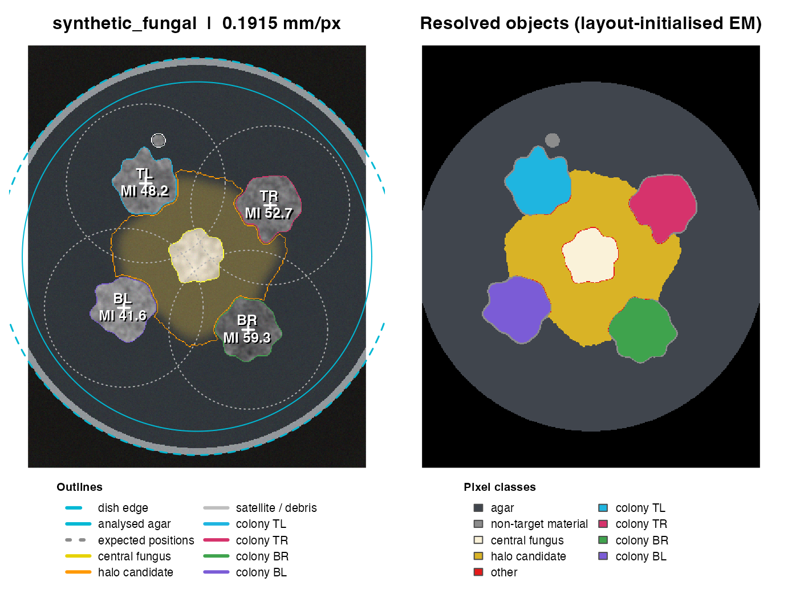
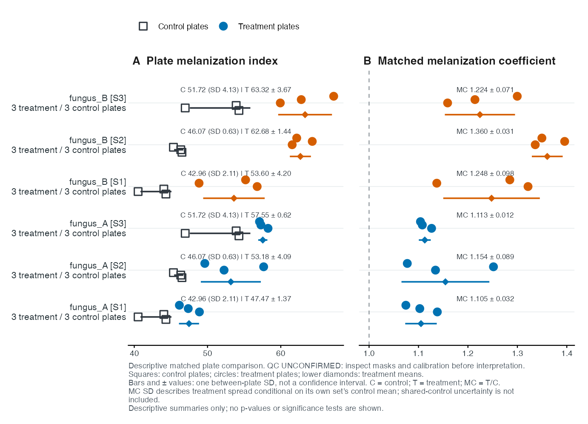

From a plate photograph to a matched response
This guide introduces the FunMel workflow: analyze plate photographs, inspect segmentation masks, organize experimental metadata, calculate matched-control melanization coefficients, assess treatment effects and export comparison figures. FunMel retains the original MycoHalo functions for compatibility.
The first worked example uses a bundled measured dataset from a 14-day confrontation assay. Subsequent examples use simulated plates and measurements to demonstrate image analysis and statistical methods. All runnable examples in this guide use bundled or simulated inputs; no photograph download is needed.
The default assay has four approximately round Zymoseptoria tritici colonies surrounding a central fungal colony and its halo candidate. Target-colony MI quantifies darkness in the four Z. tritici colonies. The central fungus and halo are measured separately and excluded from those MI summaries. A known inoculation layout supplies search regions and seeds. Detected outlines need not be round. These are image classes, not automated species identification. A central colour zone is a halo candidate, not a confirmed inhibition boundary.
The assay at a glance
Four target Zymoseptoria tritici colonies surround a central fungal colony. FunMel measures target-colony darkness and geometry, separates the central partner and halo candidate, and compares each treatment with its own controls.
Follow the workflow
| Step | Action | Result |
|---|---|---|
| 1 · Analyze | Set the plate layout and dish diameter | Target-colony measurements |
| 2 · Review | Inspect masks, calibration and warnings | Documented quality decisions |
| 3 · Match | Identify independent plates and their control sets | Verified experimental metadata |
| 4 · Compare | Calculate matched coefficients and assess a supported model | Descriptive responses and, when justified, inference |
| 5 · Communicate | Export plate-level figures and tables | Traceable results for reporting |
Three essentials before starting: MI is an image-darkness proxy, not melanin concentration. Colonies within a dish are subsamples, not independent plates. Each treatment uses only the controls assigned to its matching set.
Install FunMel
Install a GitHub-hosted copy of the package using
remotes. R >= 4.1 and source-compilation tools are
required: Xcode Command Line Tools on macOS, the matching Rtools release
on Windows, or an R development toolchain and ImageMagick development
libraries on Linux.
install.packages("remotes")
remotes::install_github("mghotbi/FunMel")
library(FunMel)The source repository is mghotbi/FunMel. The default
installation uses its default branch. To select a release tag or another
branch, add ref="TAG_OR_BRANCH".
To include the locally installed vignette:
install.packages(c("remotes", "knitr", "rmarkdown"))
remotes::install_github("mghotbi/FunMel",
build_vignettes=TRUE, dependencies=TRUE)
vignette("FunMel", package="FunMel")Vignette building requires Pandoc, normally supplied with RStudio.
Private repositories require GitHub authentication. Restart R before
replacing a loaded FunMel installation. For a downloaded source archive,
use
install.packages(file.choose(), repos=NULL, type="source")
instead.
Explore the measured 14-day case study
The bundled 14-day dataset contains twenty photographs organized into five matching sets. Each set contains one control dish and three treatment dishes, with four target Z. tritici colonies per dish. Metadata has twenty plate rows; the measurement table has eighty colony rows. This design is used to demonstrate shared-control matching. Other experiments may have different replicate counts and control arrangements, which must be recorded explicitly in their metadata.
real_meta <- read.csv(system.file("extdata","14_day_example","metadata.csv",
package="FunMel"),stringsAsFactors=FALSE)
real_colonies <- read.csv(system.file("extdata","14_day_example","colonies.csv",
package="FunMel"),stringsAsFactors=FALSE)
validate_metadata(real_meta)
knitr::kable(real_meta[real_meta$set_id=="A33_1_14_days",
c("file","plate_id","set_id","treatment","replicate")])| file | plate_id | set_id | treatment | replicate |
|---|---|---|---|---|
| 2026_10_02_99_28.JPG | 2026_10_02_99_28 | A33_1_14_days | control | 1 |
| 2026_10_02_99_29.JPG | 2026_10_02_99_29 | A33_1_14_days | A33_1 | 1 |
| 2026_10_02_99_31.JPG | 2026_10_02_99_31 | A33_1_14_days | A33_1 | 2 |
| 2026_10_02_99_32.JPG | 2026_10_02_99_32 | A33_1_14_days | A33_1 | 3 |
The same four-row structure applies to A60, B20, B22 and B37, with each set’s own control. The control replicate is 1 and the three treatment replicates are 1–3. Replicate numbers do not define one-to-one pairing here: all three treatment plates use their set’s single control. Folder-derived treatment identities and experimental mappings are provisional. Each control dish appears once in the metadata and serves as the denominator for all treatment plates in its set.
View measurements from all 20 independent plates
real_plate_means <- aggregate(MI_mean ~ plate_id + set_id + treatment,
data=real_colonies,FUN=mean)
knitr::kable(real_plate_means,digits=2)| plate_id | set_id | treatment | MI_mean |
|---|---|---|---|
| 2026_10_02_99_29 | A33_1_14_days | A33_1 | 59.98 |
| 2026_10_02_99_31 | A33_1_14_days | A33_1 | 59.91 |
| 2026_10_02_99_32 | A33_1_14_days | A33_1 | 57.62 |
| 2026_10_02_99_38 | A60_2_14_days | A60_2 | 75.03 |
| 2026_10_02_99_39 | A60_2_14_days | A60_2 | 74.20 |
| 2026_10_02_99_40 | A60_2_14_days | A60_2 | 66.06 |
| 2026_10_02_99_42 | B20_2_14_days | B20_2 | 68.54 |
| 2026_10_02_99_43 | B20_2_14_days | B20_2 | 72.09 |
| 2026_10_02_99_44 | B20_2_14_days | B20_2 | 72.87 |
| 2026_10_02_99_48 | B22_2_14_days | B22_2 | 68.14 |
| 2026_10_02_99_49 | B22_2_14_days | B22_2 | 70.35 |
| 2026_10_02_99_50 | B22_2_14_days | B22_2 | 65.98 |
| 2026_10_02_99_34 | B37_1_14_days | B37_1 | 74.28 |
| 2026_10_02_99_36 | B37_1_14_days | B37_1 | 75.48 |
| 2026_10_02_99_37 | B37_1_14_days | B37_1 | 73.99 |
| 2026_10_02_99_28 | A33_1_14_days | control | 58.90 |
| 2026_10_02_99_41 | A60_2_14_days | control | 46.87 |
| 2026_10_02_99_45 | B20_2_14_days | control | 55.12 |
| 2026_10_02_99_47 | B22_2_14_days | control | 49.30 |
| 2026_10_02_99_33 | B37_1_14_days | control | 54.46 |
These are measured image-darkness values rather than simulated outputs. Interpretation as biological treatment responses requires verification of experimental assignments, segmentation masks and colour calibration. The bundled example retains its provisional review status.
plot_treatment_comparison(real_colonies,preview=TRUE)
For each set, the displayed coefficient is
mean(MI_T1, MI_T2, MI_T3) / MI_control. This descriptive
coefficient permits one control plate. The built-in inferential
assessment has a separate replication guard and does not treat four
control colonies as four control plates. Replicate ratios share control
uncertainty; their spread is not a full ratio confidence interval.
metadata_confirmed=FALSE is retained, so the figure is
clearly provisional and final coefficient calculation remains blocked
until review.
source(system.file("examples","04_14_day_case_study.R",package="FunMel"))
file.copy(system.file("examples","metadata_14_day_case_study.csv",package="FunMel"),
"case_study_metadata.csv",overwrite=FALSE)The case-study metadata illustrates one row per independent plate and explicit matching-set assignments. The following sections use synthetic data to explain image analysis and statistical calculations step by step.
1. Analyze and review a plate
lay <- plate_layout(centre="none")
sim <- simulate_plate(width=400,height=500,layout=lay,seed=21)
control <- analyze_plate(sim$image,layout=lay,id="synthetic_control",
n_boot=20,verbose=FALSE)
control$colonies[,c("colony_id","detected","MI_mean","area_mm2")]
#> colony_id detected MI_mean area_mm2
#> x TL TRUE 46.76874 155.3031
#> x1 TR TRUE 52.94210 154.8631
#> x2 BR TRUE 57.78119 154.8631
#> x3 BL TRUE 42.08680 155.5230
plot_qc(control)
There is one measurement row per target colony. The overlay shows boundaries and labels; the resolved-object panel shows the assigned regions. Four detected regions are not proof of four correct biological objects. Check dish scale, colony boundaries, reflections, central-object assignment and warnings.
fungal_layout <- plate_layout(centre="fungus",rotation_deg=10)
fungal_sim <- simulate_plate(width=400,height=500,layout=fungal_layout,seed=22)
confrontation <- analyze_plate(fungal_sim$image,layout=fungal_layout,
id="synthetic_fungal",n_boot=20,verbose=FALSE)
confrontation$plate_summary[,c("central_partner_type","central_detected","halo_status")]
#> central_partner_type central_detected halo_status
#> x fungus TRUE candidate_detected
plot_qc(confrontation)
For fungal confrontation photographs, use
centre="fungus"; control plates use
centre="none". Pass an image path rather than
sim$image and enter the actual dish diameter:
img <- file.choose()
r <- analyze_plate(img,layout=plate_layout(centre="fungus"),
dish_diameter_mm=90,keep_images=TRUE)
plot_qc(r)
r$warningskeep_images=TRUE allows later QC plotting. Batch results
save QC PNGs but drop large image arrays. Mean MI is
100 - L* on retained, non-specular colony-interior pixels:
higher MI means darker images, not measured pigment concentration.
2. Set the inoculation layout
plate_layout(centre="fungus",rotation_deg=15,radius_frac=0.5)
#> <funmel_layout> 4 fungal colonies; centre: fungus
#> id x_rel y_rel
#> TL -0.250 -0.433
#> TR 0.433 -0.250
#> BR 0.250 0.433
#> BL -0.433 0.250
positions <- data.frame(id=c("N","E","S","W"),
x_rel=c(0,0.5,0,-0.5),y_rel=c(-0.5,0,0.5,0))
plate_layout(centre="fungus",positions=positions)
#> <funmel_layout> 4 fungal colonies; centre: fungus
#> id x_rel y_rel
#> N 0.0 -0.5
#> E 0.5 0.0
#> S 0.0 0.5
#> W -0.5 0.0Coordinates are relative to the dish radius: x increases rightward
and y downward. radius_mm can set physical inoculation
spacing. search_frac controls core-search radius. Do not
enlarge it indiscriminately to capture unrelated growth. Optional
numeric rotation_deg, radius_frac,
radius_mm, search_frac, start_deg
and n_colonies metadata columns are read by
layout_by_treatment(). Explicit layout arguments take
priority. Arbitrary image names and supported layouts are allowed;
severely merged colonies, reflections or uncertain class identity still
need review/training or manual analysis.
3. Match treatments to their controls
One row is one independently prepared dish photographed once. Four colonies on one plate are subsamples. Multiple photographs of the same dish are repeated observations, not independent biological replicates.
| Field | Required interpretation |
|---|---|
file, relative_file
|
Unique basename and optional path from the photo root |
plate_id |
Unique biological plate ID |
set_id |
Matching control set, often a batch |
treatment |
control or a consistent intervention name |
centre_model |
none for controls; fungus for fungal
confrontation |
partner_type |
Biological partner type |
zymo_strain, day, medium
|
Recommended context, complete and constant within a set if supplied |
metadata_confirmed |
TRUE after experimental mapping is verified |
qc_pass |
TRUE after acceptable mask and calibration review; required for finalization |
A treatment in S1 uses only S1 controls. Separate treatment-control experiments need separate set IDs. Several treatments can legitimately share controls within one batch: put all those plates in one set and list each control once. Do not copy a shared control under new plate IDs. The same treatment label across sets must mean the same intervention. Set IDs need not be folder names.
demo <- example_experiment(seed=42)
# Assign fungal labels to the two simulated treatment groups.
fungal_labels <- stats::setNames(c("fungus_A", "fungus_B"),
setdiff(unique(as.character(demo$metadata$treatment)), "control"))
for (component in c("metadata", "colonies")) {
d <- demo[[component]]
d$treatment <- ifelse(d$treatment == "control", "control",
fungal_labels[as.character(d$treatment)])
for (field in intersect(c("centre_model", "partner_type"), names(d)))
d[[field]] <- ifelse(d$treatment == "control", "none", "fungus")
demo[[component]] <- d
}
validate_metadata(demo$metadata)
with(demo$metadata,table(set_id,treatment))
#> treatment
#> set_id control fungus_A fungus_B
#> S1 3 3 3
#> S2 3 3 3
#> S3 3 3 3
knitr::kable(head(demo$metadata[,c("file","plate_id","set_id","treatment","centre_model")]))| file | plate_id | set_id | treatment | centre_model |
|---|---|---|---|---|
| P001.jpg | P001 | S1 | control | none |
| P002.jpg | P002 | S1 | control | none |
| P003.jpg | P003 | S1 | control | none |
| P004.jpg | P004 | S1 | fungus_A | fungus |
| P005.jpg | P005 | S1 | fungus_A | fungus |
| P006.jpg | P006 | S1 | fungus_A | fungus |
This synthetic design has three shared-control batches, each with
control, fungus_A and fungus_B and three
independent plates per group. Its true MI increments are 8 and 15, with
added plate and colony variation. Plate IDs are unambiguous; treatment C
must not reuse an ID like C1 that also names a control.
make_metadata("photos",recursive=TRUE)
# Edit photos/plate_metadata.csv: fill experimental fields, do not guess them.
meta <- read.csv("photos/plate_metadata.csv",stringsAsFactors=FALSE)
files <- file.path("photos",meta$relative_file)
validate_metadata(meta,files)
# Alternative for any original photo ZIP, including enclosing folders:
files <- prepare_photo_archive("original_photos.zip",meta,"extracted_photos")Review metadata before finalization
-
Create or load metadata. New templates include
metadata_confirmedandqc_pass, both initiallyFALSE. For an older table without the QC column: -
Review every independent plate. Inspect the target-colony masks, central fungus/halo candidate, calibration and warnings. Verify treatment labels and the
set_idthat links each treatment to its own controls. Mark only reviewed plates as passing; replace the example IDs below: -
Save and finalize when every included plate is ready. The metadata must contain exactly the analyzed plate IDs. Both flags must be logical
TRUEfor every included plate, with no missing values. UseTRUEandFALSEwithout quotation marks. Resolve failed images and unacceptable QC before finalization; the flags record user review, not automatic approval.write.csv(metadata, "plate_metadata_reviewed.csv", row.names = FALSE) reviewed <- finalize_analysis(result, metadata)
Here metadata is the reviewed metadata data frame and
result is the batch result returned by
analyze_plates(); use the actual object names in the
analysis. Adding a review column does not require repeating image
processing. Changing segmentation settings or a central-partner recipe
does require reanalysis.
The template includes logical metadata_confirmed and
qc_pass columns, both initially FALSE. Review
each plate’s masks and calibration, and verify its treatment and
matching control set before changing its flags to TRUE. For
an existing CSV without qc_pass, add
metadata$qc_pass <- FALSE in R or add a
qc_pass column in the CSV. Finalization requires both flags
to be TRUE for every included plate; adding a review column
does not require repeating image analysis.
The template records provenance but leaves unknown experimental
fields blank and metadata_confirmed=FALSE. Validation
checks unique files/plates, complete set IDs, controls within each set
and constant recorded matching contexts. Different strains, days or
media should have separate set IDs. Final pooling of multiple recorded
contexts requires an explicit pool_contexts=TRUE decision.
It is not a default biological recommendation.
The twenty-row case-study metadata is available as
inst/examples/metadata_14_day_case_study.csv, introduced at
the start of this guide. Use it as a worked example; create a separate
metadata table for each new experiment rather than reusing its
assignments.
4. Calculate the melanization coefficient
Average target-colony MI within each plate, giving each colony equal weight. Then average independent plate means within set and treatment, giving each plate equal weight. The ratio is
d <- data.frame(plate_id=rep(c("C01","T01","T02","T03"),each=4),
set_id="S1",treatment=rep(c("control","A","A","A"),each=4),
colony_id=rep(c("TL","TR","BR","BL"),4),
MI_mean=rep(c(40,48,52,56),each=4))
mc <- melanization_coefficient(d)
mc$plate_means
#> plate_id treatment set_id MI_plate n_target_colonies n_colonies_used
#> 1 C01 control S1 40 4 4
#> 2 T01 A S1 48 4 4
#> 3 T02 A S1 52 4 4
#> 4 T03 A S1 56 4 4
#> n_colonies_excluded
#> 1 0
#> 2 0
#> 3 0
#> 4 0
mc$per_plate_coefficients[,c("plate_id","melanization_coefficient")]
#> plate_id melanization_coefficient
#> 1 T01 1.2
#> 2 T02 1.3
#> 3 T03 1.4
mc$coefficients[,c("MI_treatment_mean","MI_control_mean","melanization_coefficient")]
#> MI_treatment_mean MI_control_mean melanization_coefficient
#> 1 52 40 1.3The replicate ratios are 1.2, 1.3 and 1.4; the treatment coefficient
is mean(48,52,56)/40 = 1.3. Independent plate measurements
remain available for analysis. This is not a mean of position-specific
ratios. The partner is excluded using target flags/central IDs. Missing
target MI is an error by default; na_action="omit" is an
explicit documented-exclusion option. A whole unusable plate remains
unavailable. A nonpositive control denominator gives no ratio.
If a treatment occurs in several sets, its overall descriptive coefficient is an equal-set mean of matched ratios, not a ratio against pooled unrelated controls.
x <- data.frame(plate_id=c("C1","T1","C2","T2"),set_id=c("S1","S1","S2","S2"),
treatment=c("control","A","control","A"),colony_id="TL",
MI_mean=c(20,40,80,80))
z <- melanization_coefficient(x)$coefficients
z[,c("set_id","melanization_coefficient")]
#> set_id melanization_coefficient
#> 1 S1 2
#> 2 S2 1
mean(z$melanization_coefficient) # 1.5; pooled 120/100 would be 1.2
#> [1] 1.5A ratio of 1.3 is not evidence of 30% more melanin. MI is an image-darkness proxy. Replicate-ratio SD/SE does not include uncertainty in a shared control denominator.
5. Assess treatment effects
a <- assess_experiment(demo$colonies,comparison_scope="common_sets")
a$status
#> [1] "ok"
knitr::kable(a$overall_coefficients,digits=3)| treatment | n_sets | mean_matched_coefficient | sd_across_sets | sets |
|---|---|---|---|---|
| fungus_A | 3 | 1.124 | 0.027 | S1;S2;S3 |
| fungus_B | 3 | 1.278 | 0.073 | S1;S2;S3 |
# Preserve small p-values in the displayed tables; do not round them to zero.
format_tests <- function(x) {
for(nm in intersect(c("p_value","p_adjusted"),names(x)))
x[[nm]] <- base::format.pval(x[[nm]],digits=2,eps=0.001)
x
}
knitr::kable(format_tests(a$overall_effects),digits=3)| treatment | n_sets | sets | estimate | se | df | lower | upper | p_value | p_adjusted |
|---|---|---|---|---|---|---|---|---|---|
| fungus_A | 3 | S1;S2;S3 | 5.819 | 1.353 | 18 | 2.977 | 8.661 | <0.001 | <0.001 |
| fungus_B | 3 | S1;S2;S3 | 12.950 | 1.353 | 18 | 10.108 | 15.792 | <0.001 | <0.001 |
knitr::kable(format_tests(a$treatment_comparisons),digits=3)| treatment_1 | treatment_2 | n_common_sets | sets_1 | sets_2 | comparison_scope | same_set_coverage | status | estimate | se | df | lower | upper | p_value | p_adjusted |
|---|---|---|---|---|---|---|---|---|---|---|---|---|---|---|
| fungus_A | fungus_B | 3 | S1;S2;S3 | S1;S2;S3 | common_sets | TRUE | ok | -7.131 | 1.353 | 18 | -9.973 | -4.289 | <0.001 | <0.001 |
The descriptive ratios and inferential effects are different outputs. The mixed model uses original colony MI with one random intercept per independent plate:
Every observed set-treatment cell has its own fixed mean.
lme4 fits this model; lmerTest gives
Satterthwaite contrast inference. Within-set effects subtract that set’s
control. A-versus-B compares matched effects, preserving shared-control
covariance. No test treats treatment averages as biological replicates.
An explicit method="plate_means" fits the same
cell-specific fixed means to one arithmetic mean per plate; with unequal
colony counts it need not match the mixed model’s weighting exactly.
comparison_scope="common_sets" uses shared sets only; an
absent common set gives no_common_sets. The default
matched_effects uses each treatment’s observed sets and
flags different coverage. A treatment observed only in one batch cannot
automatically be separated from batch-specific effects. Holm-adjusted p
values are reported separately from unadjusted contrast-wise confidence
intervals.
How this relates to the usual treatment-plus-batch model
The confrontation-assay principle is retained: independent replicate measurements, own-batch control normalization for interpretation, and modelling that accounts for experimental structure. FunMel’s cell-specific model estimates effects in observed sets; it does not fit a common treatment effect across random batches. An additive model instead assumes treatment differences are common across batches. For a sufficiently crossed design, the following is an advanced alternative on individual plate means, not treatment averages:
pm <- melanization_coefficient(demo$colonies)$plate_means
additive <- lm(MI_plate ~ treatment + factor(set_id),data=pm)
coef(additive)
#> (Intercept) treatmentfungus_A treatmentfungus_B factor(set_id)S2
#> 41.756742 5.819055 12.949846 5.962451
#> factor(set_id)S3
#> 9.513623This example is separate from assess_experiment(), not
an automatic fallback. Check estimability, residual variance and whether
a common treatment effect is scientifically justified. A random-batch
model such as
lme4::lmer(MI_plate ~ treatment + (1 | set_id), data=pm)
additionally requires an appropriate population-of-batches
interpretation and enough batches to estimate variance. Very few batches
can make this unstable. More complex factorial, longitudinal, spatial or
heteroscedastic designs need their own models.
Replication and diagnostics
The built-in assessment requires at least two independent plates per cell and within-plate replication for its mixed model. This is a conservative computational guard, not a universal requirement of all confrontation assays or proof of power. One control plate still permits a descriptive ratio. Some sparse designs may support other justified models; additional assumptions must not be hidden.
sparse <- suppressWarnings(assess_experiment(d))
sparse$status # insufficient_plate_replication
#> [1] "insufficient_plate_replication"Singular fits, convergence problems and insufficient replication return explicit status and withhold inferential tables. No significance test is silently substituted.
a$diagnostics$plates_per_cell
#> set_id treatment cell n_plates
#> 1 S1 control C0001 3
#> 4 S1 fungus_A C0002 3
#> 7 S1 fungus_B C0003 3
#> 10 S2 control C0004 3
#> 13 S2 fungus_A C0005 3
#> 16 S2 fungus_B C0006 3
#> 19 S3 control C0007 3
#> 22 S3 fungus_A C0008 3
#> 25 S3 fungus_B C0009 3
a$diagnostics$variance_components
#> grp var1 var2 vcov sdcor
#> 1 .plate (Intercept) <NA> 7.945878 2.818843
#> 2 Residual <NA> <NA> 1.160049 1.077056
op <- par(mfrow=c(1,2))
plot(fitted(a$model),residuals(a$model),xlab="Fitted MI",ylab="Residual")
abline(h=0,lty=2)
qqnorm(residuals(a$model));qqline(residuals(a$model))
par(op)Spatial block-bootstrap intervals describe within-image pixel sampling, not plate-to-plate biological variation. Normality and equal residual variance remain model assumptions. Account for review/exclusion decisions and design limitations.
6. Process and finalize an experiment
out <- analyze_plates(files,metadata=meta,
layout=function(row) layout_by_treatment(row),
qc_dir="FunMel_results/qc")
saveRDS(out,"FunMel_results/image_analysis.rds")
out$failed
out$coefficient_error
# STOP and inspect every QC image, measurement warning and metadata mapping.
# Correct images/masks if needed. Then edit the CSV's confirmation/review flags.
reviewed_meta <- read.csv("photos/plate_metadata.csv",stringsAsFactors=FALSE)
reviewed <- finalize_analysis(out,reviewed_meta)
write.csv(reviewed$melanization_coefficient,
"FunMel_results/matched_coefficients.csv",row.names=FALSE)
saveRDS(reviewed,"FunMel_results/reviewed_analysis.rds")finalize_analysis() requires explicit complete logical
metadata_confirmed=TRUE and qc_pass=TRUE.
These record user decisions, not automatic biological proof. It applies
verified labels to saved measurements without repeating image
processing. A changed central-partner recipe or layout requires
reanalysis. Failed images must be resolved before finalization. Do not
silently discard an inconvenient replicate. The generic
scripts/analyse_experiment.R saves measurement tables,
statuses and session information and separates the review stage from
final assessment.
7. Export figures and statistics
plot_treatment_comparison(demo,
labels=c(fungus_A="Fungal partner A",fungus_B="Fungal partner B"))
p <- plot_treatment_comparison(reviewed,file="FunMel_results/treatment_comparison")
# Vector PDF/SVG, 600-dpi PNG and _statistics.csv are written.
attr(p,"FunMel_statistics") # means, SDs, independent plate counts, descriptive delta_MIPanel A displays independent plate MI means and matching controls.
Panel B displays treatment replicate ratios and the set’s ratio of
means. Outlined squares are controls; coloured circles are treatment
plates. Lower diamonds show treatment means, with bars spanning mean ±
one between-plate SD. Each row reports control and treatment mean MI,
treatment SD, coefficient and coefficient SD. A single control plate has
no estimable SD (shown as unavailable). Shared controls remain shared,
not new replicates. Coefficient SD measures treatment variability
conditional on the shared control mean; it excludes denominator
uncertainty. These SDs are not confidence intervals. The separate model
results from assess_experiment() are needed for supported
inferential comparisons. Inferential estimates and confidence intervals
are reported separately by assess_experiment() when the
design and model diagnostics support them. preview=TRUE
labels a provisional view; it never confirms metadata or overrides
failed QC. Figures need verified identities, adequate imaging and a
suitable caption before publication. Export settings do not establish
scientific validity.
8. Interpret outputs and resolve warnings
| Output | What it measures |
|---|---|
MI_mean, MI_median
|
Target-colony image darkness |
area_mm2, circularity,
solidity
|
Detected mask geometry, conditional on scale and segmentation |
delta_MI_facing |
Facing-minus-away darkness difference within a target |
radial_asymmetry_pct |
Toward/away radial asymmetry; alias of legacy
growth_inhibition_pct
|
gap_partner_mm |
Geometric gap to the detected central partner |
profiles |
Distance-from-edge ring summaries, not independent plates |
halo_status |
Resolved colour-zone candidate or unresolved boundary |
Control-referenced growth inhibition is (C - T)/C * 100,
with a specified, consistent growth outcome (e.g. radius or area). It is
distinct from MI ratios and from radial asymmetry. FunMel’s matched
assessment currently targets MI; other outcomes and inhibition models
must be specified separately.
| Warning/status | Meaning and action |
|---|---|
| Fitted illumination range | Pre-correction green-channel surface range, not residual error |
flat_field_clipped_fraction |
Fraction of dish pixels where gains exceed correction limits; inspect calibration |
residual_agar_range_pct |
Remaining spatial-bin median variation on fitted agar pixels; not validated colony-level error |
segmentation_trim_fraction |
Narrow target/central connection removed; inspect the refined outline |
| Undetected colony | No adequate region found; do not invent MI |
not_resolved halo |
Uncertain boundary; do not call it biological zero |
| Pending coefficient | Metadata/QC/missing-value issue; read its explicit reason |
Inferential status other than ok
|
Review model/replication; descriptive ratios may still be available |
Flat-field fitting is not a substitute for comparable photography and exposure. Use diffuse, consistent lighting and an appropriate reference where possible. An agar reference is justified only for comparable, untinted medium; a reference card needs known colour and suitable placement. Unrecoverable clipping or organism colour gradients cannot be solved reliably by an image-only illumination model.
9. Continue with runnable examples
source(system.file("examples","01_image_quickstart.R",package="FunMel"))
source(system.file("examples","02_coefficient_arithmetic.R",package="FunMel"))
source(system.file("examples","03_fungal_matched_experiment.R",package="FunMel"))The bundled 14-day dataset is a worked case study. Its metadata has
unverified folder-derived identities, and each set has three treatment
plates and one control plate. That does not meet the built-in inference
guard. Its technical review is bundled in
validation/photo_review.zip; successful detection counts do
not certify biological masks or calibration. None of its filenames are
required by the generic image or coefficient functions.
The separate guides/FunMel_overview.md explains ImageJ
complementarity, properties, functions and the algorithms. ImageJ/Fiji
already offers ROI measurement and macro automation; no head-to-head
superiority in accuracy or speed is claimed.